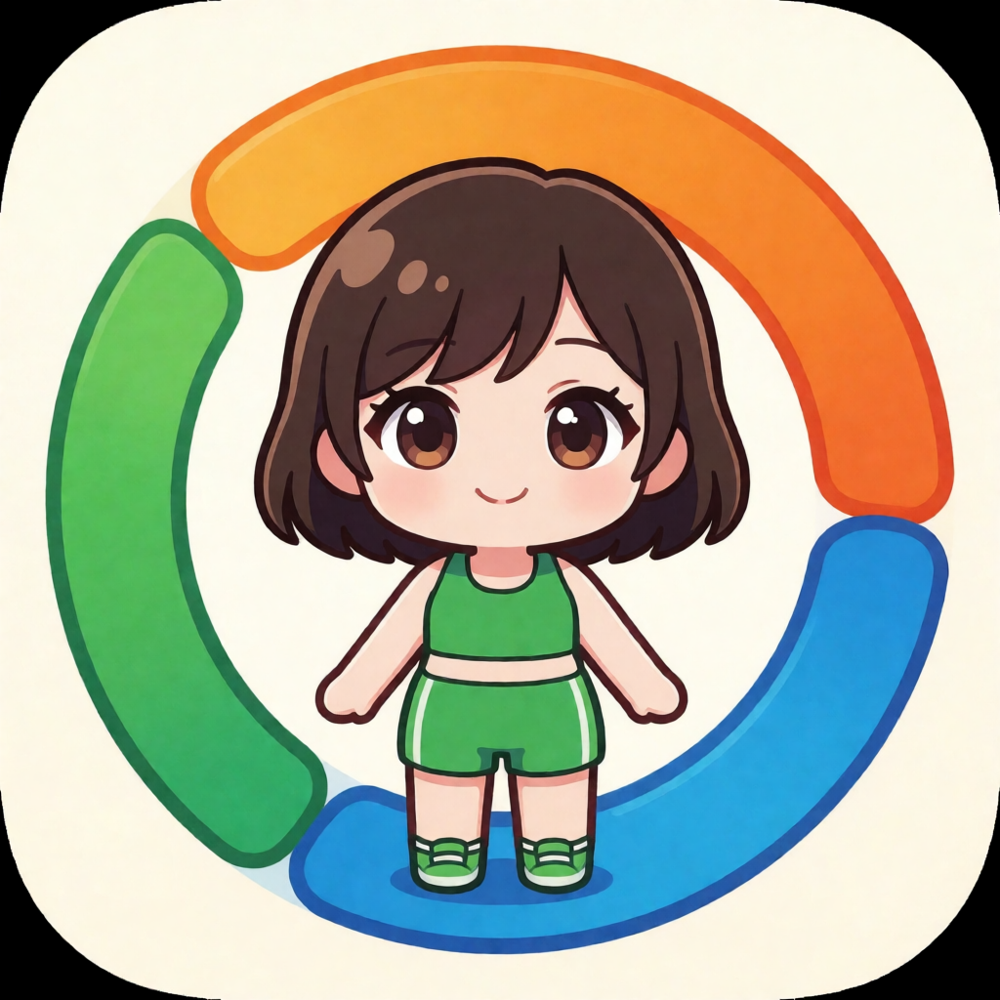
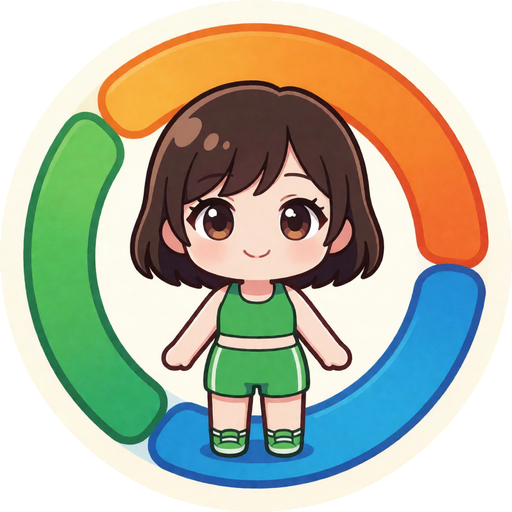
橙/绿/蓝三弧对应碳蛋脂配比，构图最贴应用语义；角色偏小
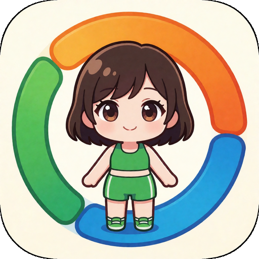
512px192px144px96px72px48px营养主题最直白，但缩小后细节糊成一团
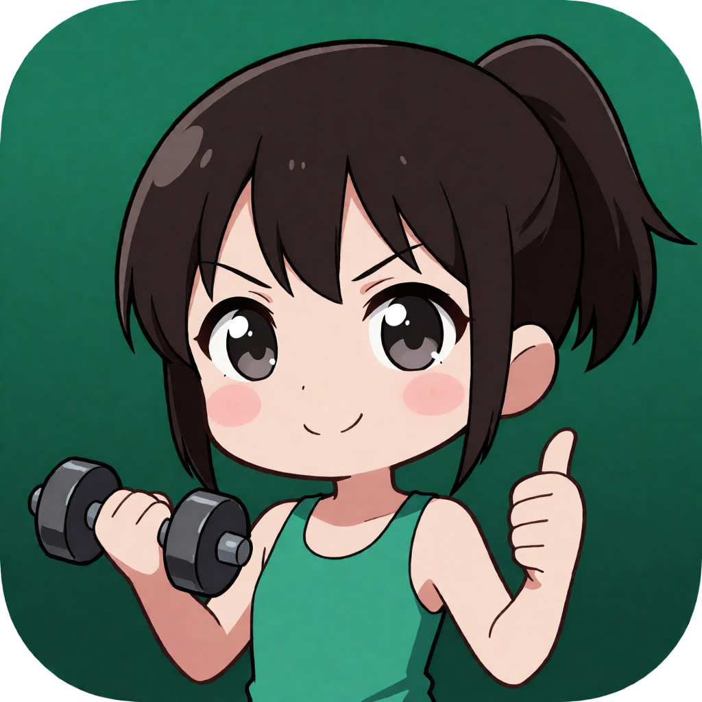
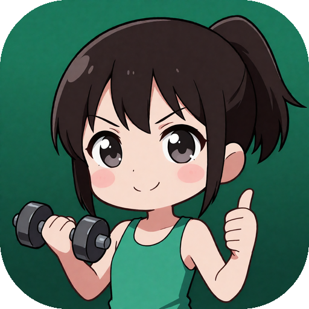
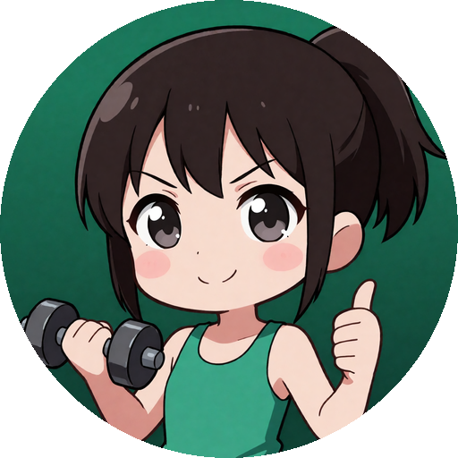
轮廓最干净，森绿背景呼应应用主题；偏「健身」少「吃」
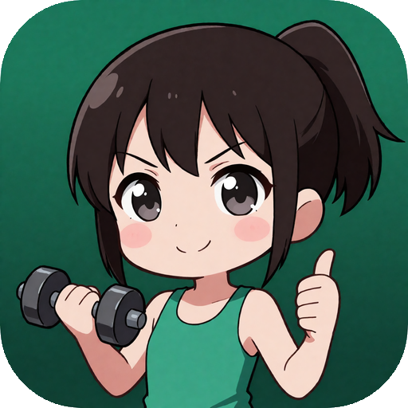
512px192px144px96px72px48px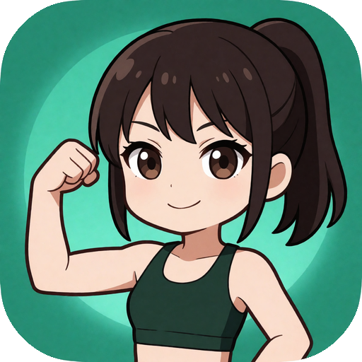
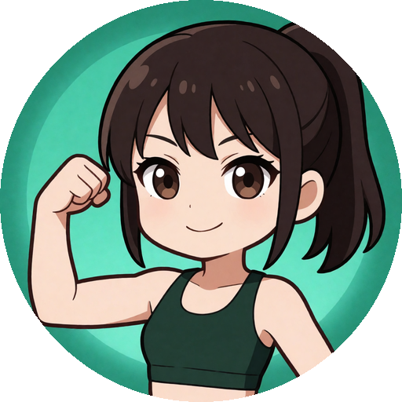
与 C 同类，构图略平淡
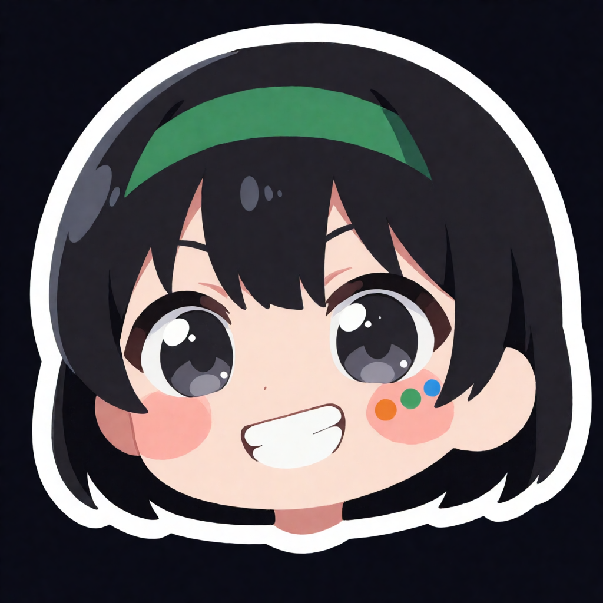
脸颊三点呼应三宏量；牙齿有 AI 瑕疵，需重出
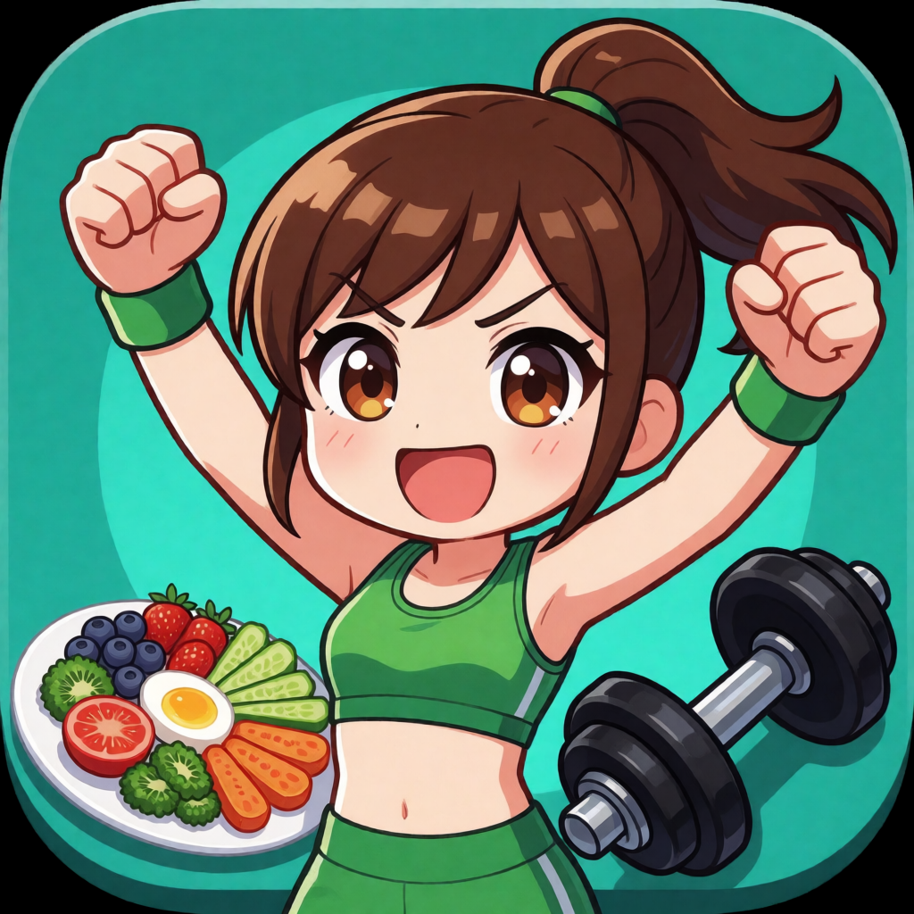
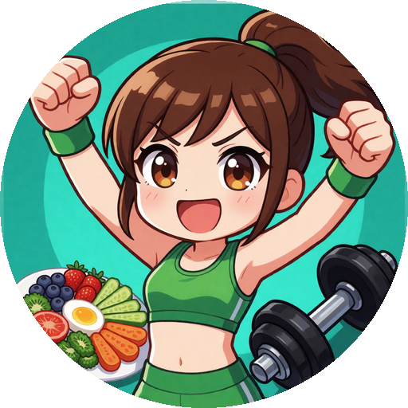
元素最丰富，缩小后偏乱
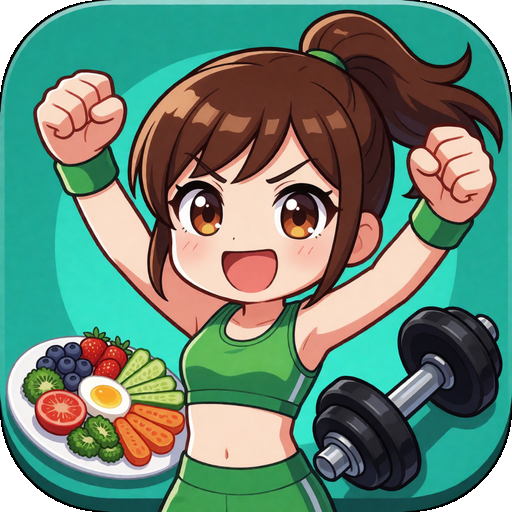
512px192px144px96px72px48px